Regresi Linier (Ordinary Least Square)
Menggunakan jamovi
2026-04-01
Outline
- Berlatih menginspeksi data secara visual dengan scatterplot
- Model regresi linier (ordinary least square)
- Menarik garis regresi (fitted regression lines)
- Varians yang dapat dan yang tidak dapat dijelaskan oleh model (R2)
- Menguji hipotesis
- Mengecek kecocokan model dengan data (model fit)
- Mengecek asumsi
- Distribusi (normalitas) residual
- Homoskedastisitas
- Multikolinearitas
- Mendeteksi outliers
- Menguji interaction effects dan model change
- Menulis hasil analisis regresi linier dengan interaction terms dalam manuskrip
Ilustrasi Kasus
Marimar adalah seorang wali murid di sebuah PAUD di Kota Surabaya. Pada suatu hari, ia mengamati seorang anak (dan orangtua) yang perilakunya menarik perhatiannya.
Ibu anak tersebut bersikeras untuk menunggui anaknya di sekolah, padahal guru kelas meminta agar Ibu pulang saja, mempercayakan anak pada guru, dengan tujuan melatih kemandirian anaknya.
Melihat ibunya yang menggerutu karena diminta bu Guru pulang, si anak menangis meraung-raung tidak mau ditinggalkan. Akhirnya, terpaksa bu Guru membiarkan si Ibu menunggu di sekolah.
Marimar heran sekaligus penasaran, mengapa tiap anak memberikan respon yang berbeda ketika ditinggal orangtuanya di sekolah. Ada yang menangis meraung-raung, ada yang lebih santai dengan langsung bermain. Apakah ada kaitan antara kemandirian anak dengan karakteristik orangtuanya?

Eksplorasi dataset
Dataset 1: dataset-sekolah.omv
- Marimar yang penasaran akhirnya melakukan survei di 5 PAUD di Kota Surabaya, dengan ukuran sampel sebesar total 400 orang
- Buka laman web workshop
- Klik menu Dataset di pojok kanan dan unduh dataset-sekolah.omv
- Dalam dataset tersebut ada beberapa variabel
- neu = Kecenderungan Neuroticism ibu (five factor model). Makin tinggi skor, Ibu makin mudah cemas, frustasi, cemburu, rasa bersalah, dan ketakutan berlebihan.
- trust = Kepercayaan ibu bahwa perkembangan anak dapat berlangsung secara natural (trust in organismic development). Makin tinggi skor, ibu makin percaya.
- hi = Pendapatan seluruh anggota keluarga inti (household income). Skor makin tinggi, pendapatan makin banyak.
- mandiri = Tingkat kemandirian anak. Makin tinggi skor, anak makin independen dan lebih santai ketika ditinggal orangtuanya di sekolah.
Deskriptif
- Coba eksplorasi keempat variabel diatas dengan pendekatan statistik deskriptif.
- Pada menu bar, klik exploration lalu descriptives. Setelah itu masukkan keempat variabel tersebut dalam kolom variables.
- Klik opsi Statistics dan pada bagian Dispersion centang Std. deviation.
- Klik opsi plots, di bagian histograms, centang histograms dan density.
Output
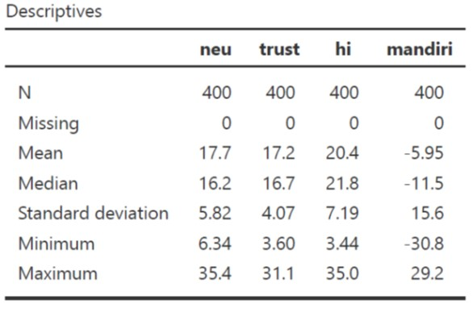
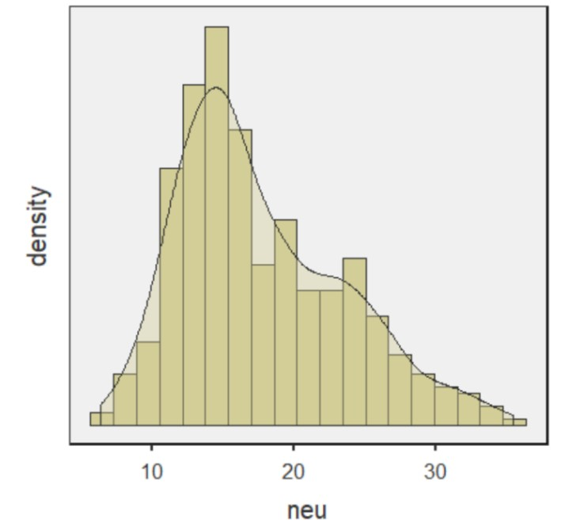
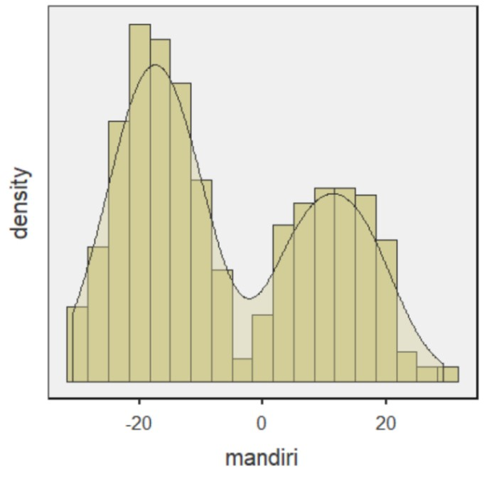
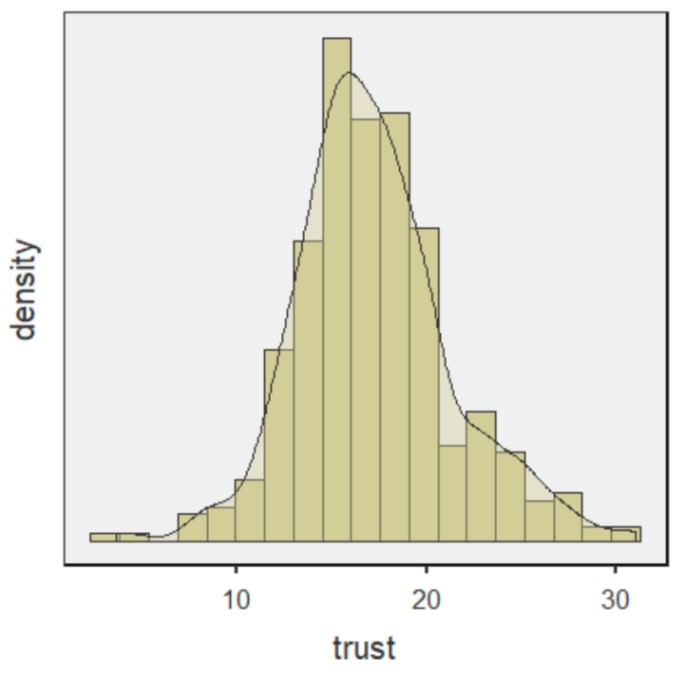
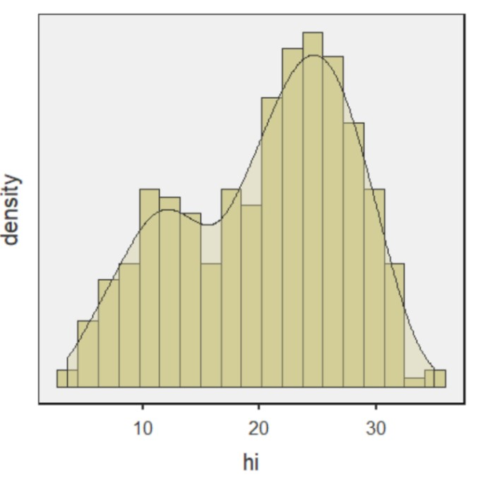
Membuat scatterplot
- Merupakan teknik inspeksi visual kemungkinan terjadinya korelasi antara variabel.
- Setelah melakukan analisis deskriptif, sepertinya akan menarik membandingkan kaitan antara:
- Neuroticism (neu) dengan tingkat kemandirian (mandiri)
- kepercayaan ibu bahwa anak dapat berkembang secara natural (trust) dengan tingkat kemandirian (mandiri)
- Ayo kita buat scatterplotnya!
- Klik exploration, pilih scatterplot
- Masukkan mandiri pada kolom Y-axis
- Masukkan neu (scatterplot 1) dan trust (scatterplot 2) pada kolom X-axis
- Pada opsi regression line, pilih linear dan centang kotak standard error
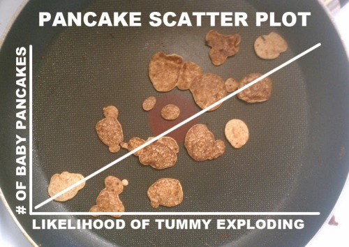
Scatterplot
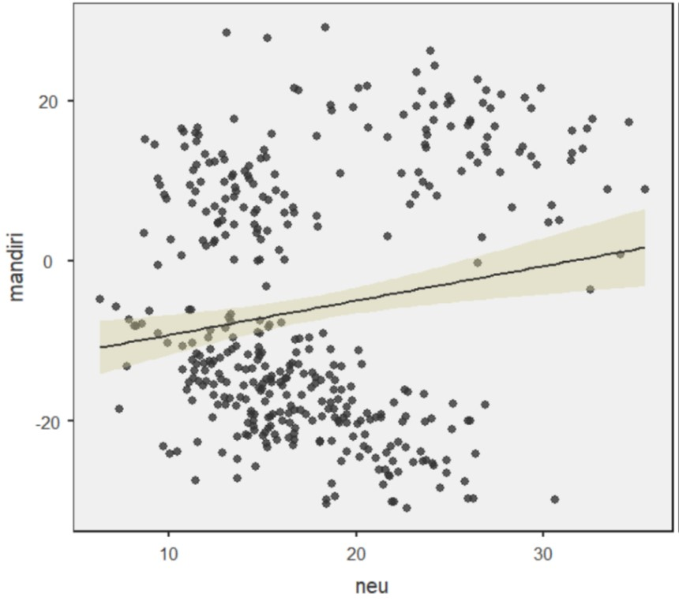
Scatterplot 1. Neuroticism dan Kemandirian
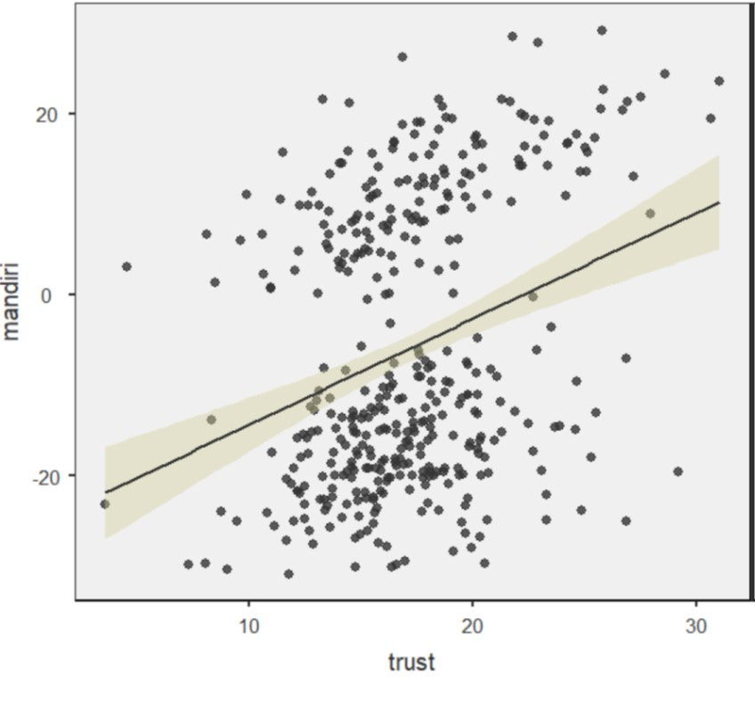
Scatterplot 2. Trust dan Kemandirian
Bagaimana kekuatan dan arah hubungan pada scatterplot 1 dan 2?
Ayo main!! 📢
🔗 Guess the correlation 🔗

Kekuatan dan arah korelasi 1️⃣
Korelasi yang tampak pada scatterplot tadi dapat dikonseptualisasikan dengan lebih jelas dengan menghitung koefisien korelasi, yang mengimplikasikan kekuatan hubungan.
- Pearson’s r misalnya, biasanya ditulis dengan rxy, sedangkan Spearman’s ρ ditulis rs.
- Berkisar antara -1 s/d 1
- -1 artinya korelasi negatif sempurna, 1 artinya korelasi positif sempurna
- Koefisien korelasi Pearson’s r atau Spearman’s ρ dihitung dari kovarians (covariance/average cross product dari dua variabel).
- Dua variabel yang sama sekali tak berkorelasi, maka kovarians nol.
Kekuatan dan arah korelasi 2️⃣
- Kovarians sulit diinterpretasi, sehingga formula Pearson’s r dan Spearman’s ρ menstandardisasi kovarians agar lebih mudah diinterpretasi
- Fungsi Pearson’s r dan Spearman’s ρ mirip z-score
- Kuat >< lemahnya koefisien korelasi sebenarnya sangat tergantung konteks penelitiannya.
- Pada fenomena yang multifaktor, misalnya mencari variabel yang berkaitan dengan kecenderungan Skizofrenia, korelasi 0.3 aja sudah bermakna sangat besar.
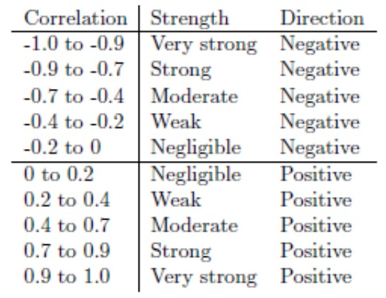
Regresi linier (ordinary least square regression/OLS)
- Merupakan kelanjutan yang lebih kompleks dari Pearson’s r
- Ide dasarnya adalah menyusun persamaan garis yang dapat digunakan untuk memperkirakan nilai Y ketika nilai X diketahui
- Contohnya, kita tahu bahwa kemandirian berkorelasi positif dan sedang dengan neuroticism dan trust
- Namun dengan regresi, kita bisa mengestimasi tingkat kemandirian anak, ketika hanya informasi mengenai neuroticism dan trust yang tersedia.
- OLS bekerja dengan pendekatan least square, artinya mencari jumlah kuadrat terkecil antara garis regresi (nilai Y yang diperkirakan oleh model) dengan nilai Y yang diobservasi.
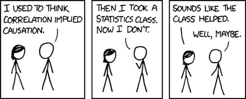
Persamaan garis regresi
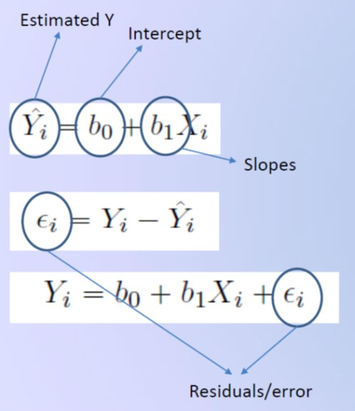
Contoh garis regresi
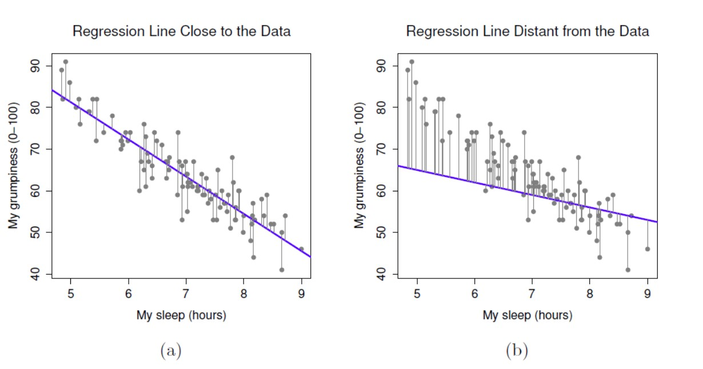
Asumsi yang harus dipenuhi
- Prediktor dan variabel dependen berkorelasi secara linier
- Lakukan analisis korelasi sebelum melakukan regresi untuk memastikan asumsi ini terpenuhi
- Residual (varians error) variabel dependen yang tidak dapat dijelaskan oleh model
- Berdistribusi normal
- Variansnya homogen (homoskedasdisitas)
- Tidak dipengaruhi oleh prediktor lain diluar model
- Prediktor dalam model independen satu sama lain (tidak berkorelasi)
- Berlaku ketika ada dua atau lebih prediktor dalam satu model regresi
- Kalau prediktor berkorelasi satu sama lain maka telah terjadi multi-kolinearitas
- Data/observasi dan residual harus independen
Latihan 1️⃣
Marimar ingin tahu apakah ada kaitan antara kecenderungan neuroticism ibu terhadap kemandirian anak.
- Klik menu regression, pilih linear regression.
- Masukkan mandiri dalam kolom dependent variable dan neu pada covariates.
- Pada opsi assumption checks, centang Q-Q plot of residuals, residual plots dan Cook’s distance.
- Pada opsi model fit, centang R, R2, dan F test.
- Pada opsi model coefficients, centang ANOVA test, confidence interval, dan standardized estimates.
Model fit
- Model regresi kita cukup mampu menggambarkan data (F(1,398)=10.5, p=.001).
- Namun model hanya mampu menjelaskan 2.58% varians kemandirian anak (R2=.0258).
- Coba bandingkan sum of squares antara neu dengan Residuals (tabel ANOVA).
- Manakah yang lebih banyak; varians yang dapat, atau yang tidak dapat dijelaskan oleh model?
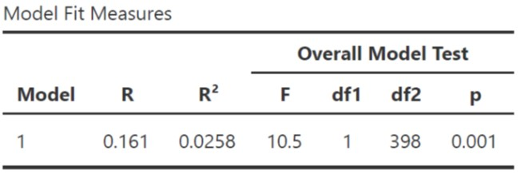
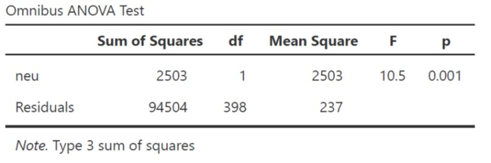
Note
Statistical grand prize ❗: menjelaskan varians variabel dependen
Hampir semua teknik statistik intinya adalah membandingkan varians yang dapat dengan yang tidak dapat dijelaskan (residual) oleh model
Koefisien model
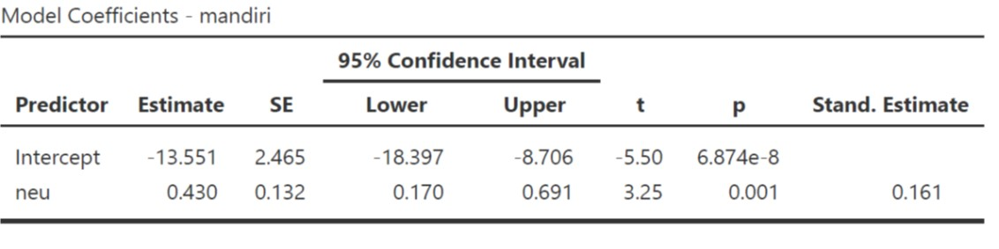
Kecenderungan neuroticism ibu dapat menjelaskan variasi kemandirian anak (B=0.430 95% CI [0.170, 0.691], SE=0.132, t=3.25, p=.001).
Interpretasi standardized (β) dan unstandardized (B) estimates
- Unstandardized (B) estimates: Setiap perubahan neuroticism sebesar 1 poin, maka tingkat kemandirian juga berubah sebesar 0.43 poin.
- Standardized (β) estimates: Setiap berubah neuroticism sebesar 1SD, maka tingkat kemandirian juga berubah sebesar 0.161SD.
Tip
Tips ❗: Selalu laporkan unstandardized estimates dan confidence intervalnya (Appelbaum, et. al., 2018).
Diagnostik model: distribusi residual
- Salah satu asumsi penting yang harus dipenuhi ketika melakukan regresi OLS adalah residual (bukan data) harus berdistribusi normal.
- Sebaran residual mengikuti garis diagonal dalam Q-Q Plot, tandanya residual berdistribusi normal.
- Apabila residual tersebar secara acak atau makin menjauhi garis diagonal, berarti tidak berdistribusi normal dan ini melanggar asumsi ordinary least square.
- Akibatnya, model tak dapat diinterpretasi dan koefisien model (intercept dan slope) bias.
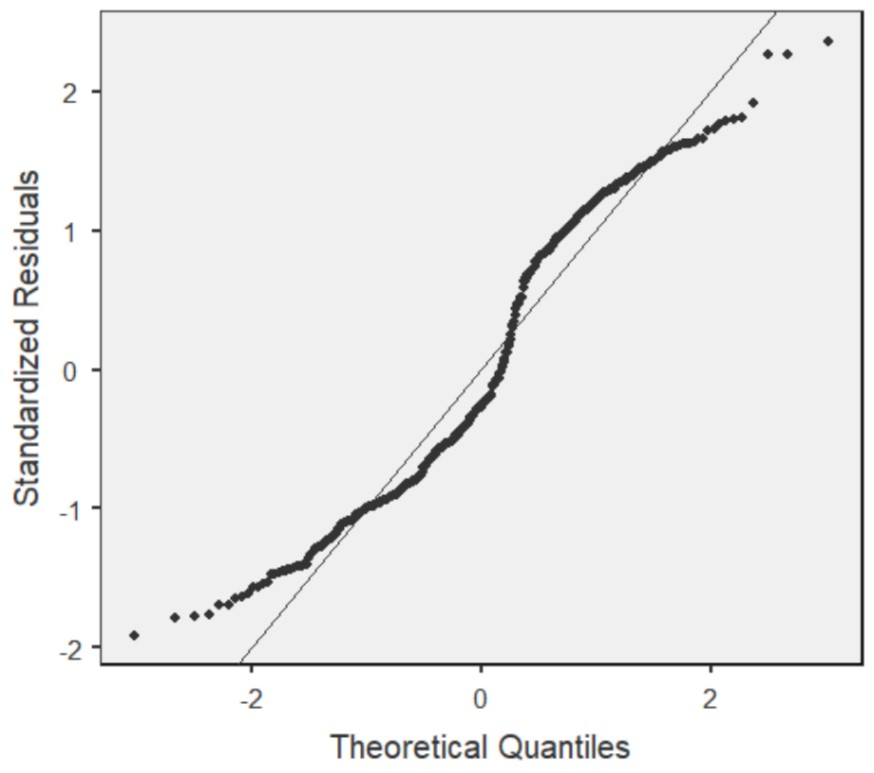
Diagnostik model: varians residual 1️⃣
- Asumsi lain yang harus dipenuhi adalah homoskedasdisitas.
- Residual memenuhi asumsi homoskedasdisitas, apabila variansnya uniform (sama) meskipun nilai X dan fitted Y (nilai Y yang diestimasi oleh model) berubah-ubah.
- Hal ini ditunjukkan dari dua grafik disamping yang menunjukkan distribusi varians residual uniformed.
- Apabila asumsi ini dilanggar, maka residual mengalami heteroskedasdisitas, dengan begitu, estimasi model akan bias.
- Kalau residual menunjukkan karakteristik heterokedastik, maka distribusi residual akan terlihat seperti kerucut.
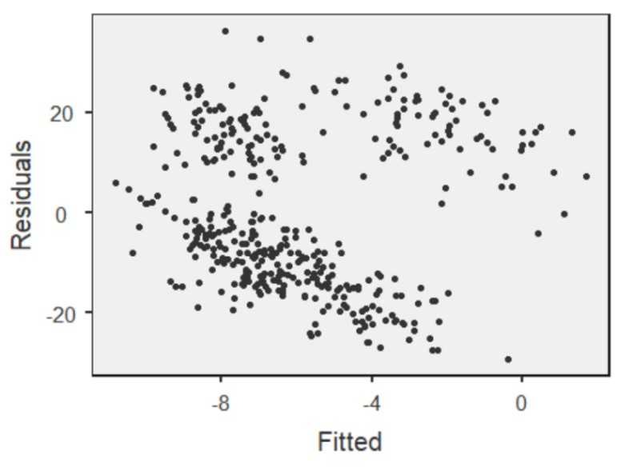
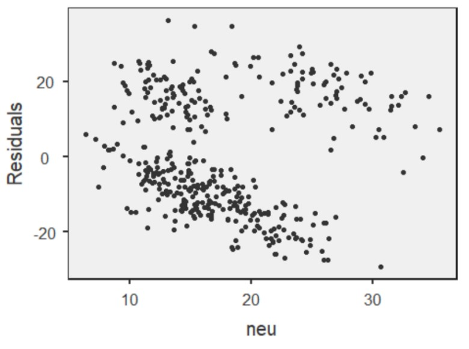
Diagnostik model: varians residual 2️⃣
- Plot disamping kanan menunjukkan kondisi heteroskedastik
- Contoh heteroskedasdisitas: pendapatan personal dan usia
- Pada usia anak-anak, remaja dan dewasa awal, variasi tingkat pendapatan sangat kecil, sedangkan yang usianya lebih tua, variasi tingkat pendapatan lebih besar.
- Apa kira-kira alasannya?
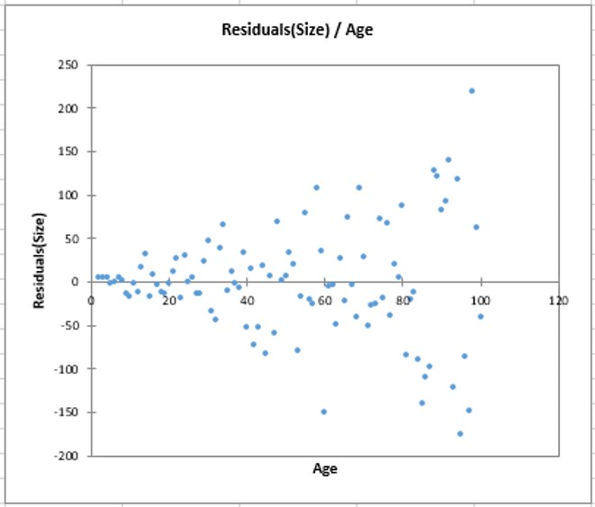
Diagnostik model: deteksi outliers 1️⃣
- Gerak-gerik data outlier penting untuk diperhatikan.
- Seperti grafik di sebelah kanan, penambahan data outlier dapat merubah garis regresi secara drastis.
- Untuk melihat seberapa ‘mengkhawatirkan’ data outlier ini dalam mengganggu garis regresi, kita dapat menggunakan Cook’s distance.
- Umumnya, apabila outlier dibuang dan perubahan rata-rata, median, dan standar deviasi kurang dari 1, dapat diabaikan. Artinya outlier tersebut tidak terlalu mengganggu garis regresi.
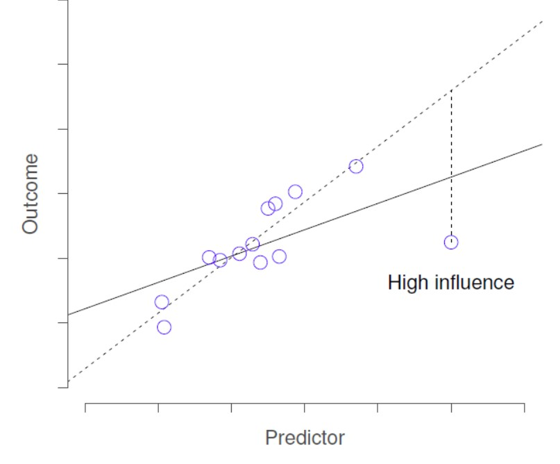
Diagnostik model: deteksi outliers 2️⃣
- Kalau diatas 1 bagaimana?
- Coba buat lagi garis regresi tanpa outlier tersebut, cari tahu kenapa nilainya bisa se-ekstrim itu
- Outlier umumnya tidak boleh dihapus dari dataset tanpa justifikasi yang jelas, karena ini termasuk questionable research practices.
- Kalau sangat mendesak, outlier dapat dikeluarkan dari model. Tetapi ini tidak disarankan dan kalaupun dilakukan, analisis harus dilaporkan dua versi; dengan dan tanpa outlier.
- Daripada dihapus, sebaiknya pakai regresi dengan robust estimator yang dapat mengurangi efek outlier.
- Dari output di samping, dapat disimpulkan bahwa apabila outlier tidak disertakan dalam analisis, maka perubahan rerata, median, dan standar deviasi keseluruhan sampel kurang dari 1 dari nilai asalnya.
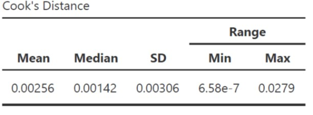
Cara melaporkannya dalam manuskrip
“… untuk menguji hipotesis penelitian, peneliti melakukan analisis regresi ordinary least square (OLS). Hasil analisis menunjukkan bahwa model cocok menggambarkan data, namun hanya mampu menjelaskan kurang dari 3% varians tingkat kemandirian siswa (F(1,398)=10.5, p=.001, R2=.0258).
Kecenderungan neuroticism ibu berkontribusi berarti dalam menjelaskan varians tingkat kemandirian siswa, dimana perubahan kecenderungan neuroticism sebesar 1 poin diasosiasikan dengan perubahan tingkat kemandirian anak sebesar 0.43 (B=0.430 95% CI [0.170, 0.691], SE=0.132, t=3.25, p=001).
Setelah dilakukan diagnostik, varians yang tidak dapat dijelaskan oleh model berdistribusi normal dan ketika dikorelasikan dengan nilai prediktif tingkat kemandirian siswa dan kecenderungan neuroticism ibu, maka menghasilkan varians yang homogen (homoskedastik).
Diagnostik outlier dilakukan dengan menggunakan Cook’s distance, dan menghasilkan kesimpulan bahwa apabila outlier tidak disertakan dalam model, maka perubahan rerata, nilai tengah, dan simpangan baku kurang dari satu dari nilai awalnya, sehingga tidak berpotensi mendistorsi garis regresi…”
Latihan 2️⃣
- Marimar ingin menambahkan interaksi antara neuroticism dengan trust
- Mungkin saja ibu yang percaya/kurang percaya bahwa anak dapat berkembang secara natural, korelasi antara neuroticism dengan kemandirian akan makin negatif.
- Selain itu, bisa jadi ada kaitannya antara pendapatan keluarga dengan tingkat kemandirian anak.
- Tambahkan variabel trust, neu, dan hi dalam kolom covariates.
Latihan 2️⃣
- Lakukan semua langkah yang sudah dilakukan di Latihan 1️⃣
- Pada opsi model builder, klik add new block
- Klik Block 1, sampai keluar shading di pinggir kotak, lalu masukkan hi
- Klik Block 2, sampai keluar shading di pinggir kotak
- Kemudian sambil menekan tombol
ctrl, klik neu kemudian trust, lalu klik tanda panah yang kedua dan pilih interaction
- Dengan begitu kita punya 2 model regresi
- Model 1 prediktornya hi
- Model 2 prediktornya hi dan interaksi antara neu dengan trust
- Pada opsi assumption checks, tambahkan centang pada collinearity statistics
- Pada opsi model fit, klik AIC dan BIC.
- Pada opsi estimated marginal means, masukkan neu dan trust dalam terms 1
Model fit
Model 2 (F(2,397)=58.2, p<.001, R2=.226) dapat menjelaskan varians tingkat kemandirian anak lebih baik daripada Model 1 (F(1,398)=10.2, p=.002, R2=.025), dengan overlapping variances sebesar 22.6% dibanding 2.5%.
Information criteria (AIC & BIC)
- Digunakan untuk mengakomodasi kelemahan dari R2 (apabila prediktor dalam model ditambah terus, maka nilai R2 akan terus naik)
- Kelemahan R2 ini serupa dengan prinsip reliabilitas dan jumlah aitem
- Rumus dari information criteria memberi “penalti” kepada model yang mengandung lebih banyak variabel prediktor
- Pilih model dengan AIC dan BIC yang terkecil (Model 2)
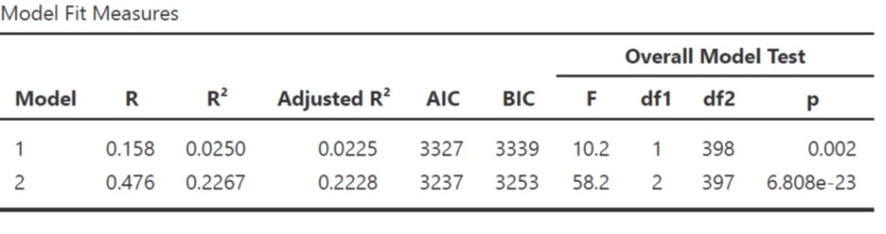
Model comparison
Ketika dibandingkan, Model 1 dan Model 2 berbeda signifikan (F(1,397)=104, p<.001). Δ_R_2=.202, artinya selisih R2 Model 1 dan Model 2=.202 atau R2 naik sebesar 20.2%
Coba perhatikan Residuals Model 1 dengan Model 2
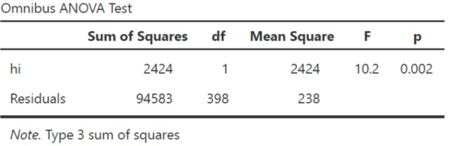
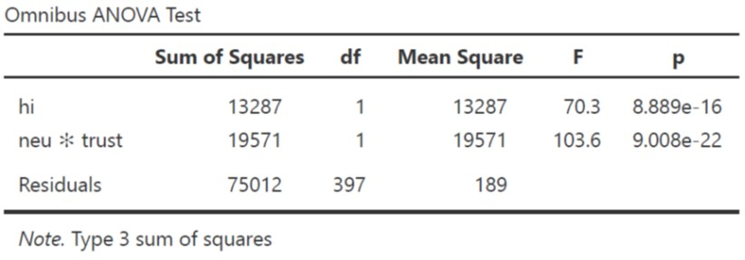
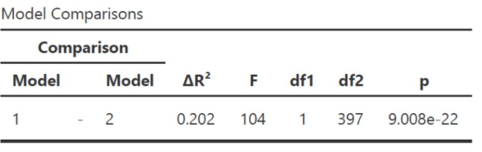
Koefisien model 2
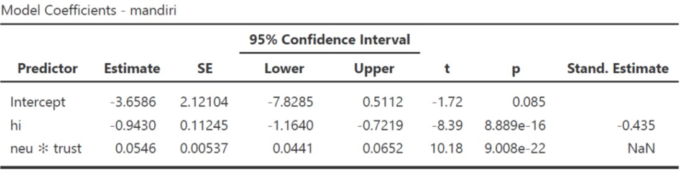
Pendapatan keluarga dapat menjelaskan variasi kemandirian anak (B=-0.943 95% CI [-1.164, -0.721], SE=0.112, t=-8.39, p<.001).
Interaction terms juga signifikan dalam menjelaskan varians kemandirian anak (B=0.054 95% CI [0.044, 0.065], SE=0.005, t=10.18, p<.001).
Simple slope
- Interpretasi slopes pada interaction terms:
- Unstandardized B yang positif artinya, pada ibu dengan trust yang tinggi, korelasi antara kecenderungan neuroticism dengan kemandirian anak juga semakin positif/menguat.
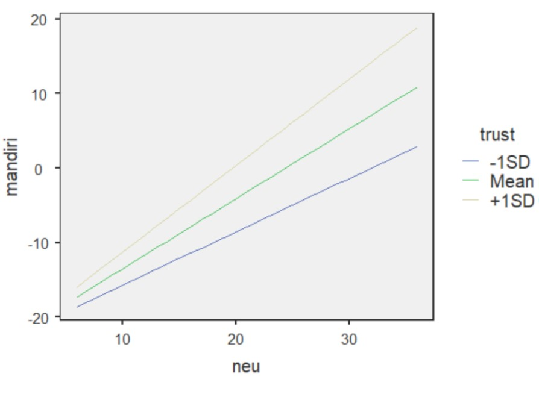
Diagnostik kolinieritas
- Dapat dideteksi dengan melakukan analisis melihat variance inflated factors (VIF).
- Bila VIF < 2.5, maka multi-kolinearitas kemungkinan besar tidak terjadi.
- Penelitian longitudinal punya potensi terjadinya autokorelasi (residual time 1 dan time 2 berkorelasi)
- Dapat dicek dengan tes Durbin-Watson
- Bila nilai p analisis autokorelasi > 0.001, maka multi-kolinearitas tidak terjadi.
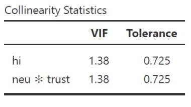
Bagaimana melaporkannya?
“…untuk menginvestigasi keterkaitan antara pendapatan keluarga, kecenderungan neuroticism ibu, dan kepercayaan ibu bahwa perkembangan anak dapat terjadi secara natural dengan tingkat kemandirian anak, peneliti melakukan analisis regresi linier hirarkial dengan interaction terms. Peneliti menyusun dua model, dimana; model 1 mengestimasi varians tingkat kemandirian anak dengan pendapatan keluarga inti sebagai prediktor, sedangkan pada model 2 peneliti menambahkan prediktor berupa interaction terms antara neuroticism dengan trust.
Ketika dibandingkan, Model 1 dan Model 2 berbeda signifikan (F(1,397)=104, p<.001). R2 bertambah sebesar 20.2% (ΔR2=.202). Model 2 (F(2,397)=58.2, p<.001, R2=.226, AIC=3237, BIC=3253) dapat menjelaskan varians tingkat kemandirian anak lebih baik daripada Model 1 (F(1,398)=10.2, p=.002, R2=.025, AIC=3327, BIC=3339).
Pendapatan keluarga dapat menjelaskan variasi kemandirian anak (B=-0.943 95% CI [-1.164, -0.721], SE=0.112, t=-8.39, p<.001). Interaksi antara neuroticism dengan trust juga signifikan (B=0.054 95% CI [0.044, 0.065], SE=0.005, t=10.18, p<.001). Artinya, korelasi antara kecenderungan neuroticism ibu dengan kemandirian anak akan menguat pada ibu yang trustnya tinggi.
Potensi multikolinieritas dideteksi dengan VIF dan hasil analisis menunjukkan multikolinieritas kemungkinan besar tidak terjadi (VIF=1.38)…”
Latihan mandiri 1️⃣
Fernando Jose sebal sekali karena ia kembali kehilangan pengokotnya dan ini kali ketiga ia kehilangan pengokot yang baru dibelinya seminggu yang lalu.
Teman-teman kerjanya memang punya kebiasaan buruk meminjam barang tanpa seijinnya. Ia akhirnya bertanya, apa ya yang menyebabkan teman-temannya berperilaku seperti itu?
Akhirnya ia menduga, mungkin ada kaitannya dengan faktor kepribadian (conscientiousness) dan faktor situasional di tempat kerjanya.
Untuk faktor situasi, ia mengamati sepertinya persepsi atas kondisi kerja yang informal dan relasi formal antara senior-junior mungkin juga berkaitan dengan timbulnya perilaku tersebut.

Eksplorasi dataset 2️⃣
Dataset 2: dataset-organisasi.omv
- Fernando Jose akhirnya melakukan penelitian survei pada 450 karyawan di 3 perusahaan yang berbeda
- Buka laman web workshop dan unduh dataset-organisasi.omv
- Dalam dataset tersebut ada beberapa variabel
- con = Kecenderungan conscientiousness karyawan. Makin tinggi skornya, karyawan lebih mungkin menunjukkan kehati-hatian dan keteraturan dalam bekerja, efisien, dan bertanggung jawab.
- inf = Persepsi atas nuansa informal dalam kantor. Makin tinggi, karyawan makin merasa situasi kantor lebih informal.
- pow = Jarak kuasa (power distance) dalam relasi antar-karyawan. Makin tinggi, budaya senioritas makin parah.
- incivil = Intensitas perilaku tidak beradab. Makin besar skornya, karyawan akan lebih mungkin emotionally abusive, suka mengambil barang teman tanpa ijin, dan perilaku tidak pantas yang lain.
Latihan mandiri 1️⃣
- Buatlah 2 model untuk mengestimasi varians perilaku tidak beradab dimana:
- Prediktor model 1: jarak kuasa
- Prediktor model 2: interaksi antara conscientiousness dengan persepsi situasi kerja yang informal
- Bagaimana hipotesisnya?
- Laporkan hasil analisis datanya dan berikan penjelasan singkat apakah hasil analisis data menolak/gagal menolak hipotesis penelitian.
Ada pertanyaan❓

Note
- Paparan disusun dengan menggunakan dan Quarto dengan template dari UNAIR Theme.
- Kontak saya via amelia.zein@psikologi.unair.ac.id